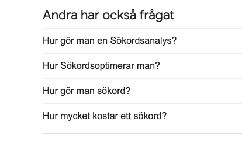
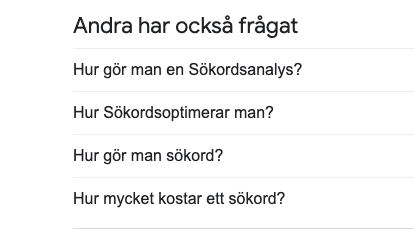
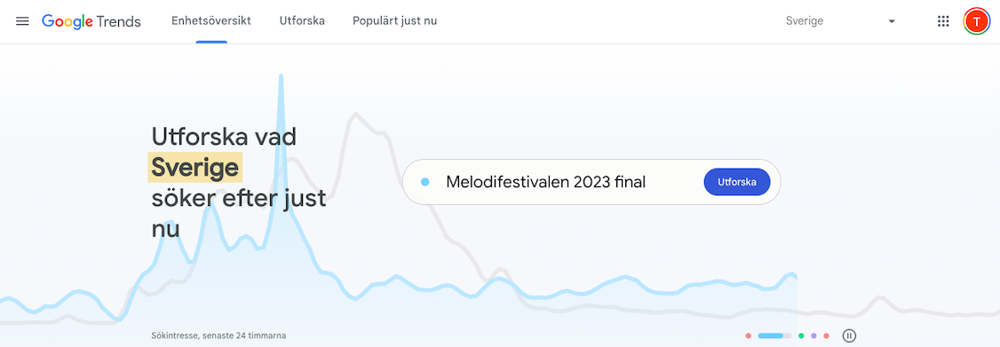

Digital Marknadsföring
SEO
SEM
Sociala Medier
Vi har uppnått arbetssätt och erbjuder smarta lösningar inom seo, sem och sociala medier.
Att göra en sökordsanalys är en viktig del av sökmotoroptimering (SEO). Det handlar om att identifiera de sökord eller fraser som din målgrupp söker efter på Google, och sedan optimera din webbplats för dessa sökningar. Men hur gör man en sökordsanalys, och vilka verktyg kan man använda för att få bästa möjliga resultat? I den här artikeln kommer vi att gå igenom stegen för att göra en sökordsanalys med hjälp av de bästa gratisverktygen.

Innan du börjar använda verktyg är det en bra idé att brainstorma olika sökord och fraser som är relevanta för ditt företag och din webbplats. Tänk på vad dina kunder skulle söka efter när de letar efter dina produkter eller tjänster. Försök att tänka brett och inkludera olika variationer av sökord. 92% av alla sökningar som görs har färre än 10 sökningar per månad så viktigt att förstå sin målgrupp och vilka söktermer de använder för att hitta dig.
En enkel men effektiv metod för att hitta sökord är att använda Google sökförslag. Detta är de ord som dyker upp när du börjar skriva in en sökning i Google. Skriv in ett av dina sökord i Google sökfältet och se vilka förslag som dyker upp. Detta ger dig en bra indikation på vad dina potentiella kunder söker efter.
 

Google Keyword Planner är ett kraftfullt verktyg som är gratis att använda. Det ger dig information om sökvolymen för olika sökord, konkurrensnivån och förslag på andra sökord som kan vara relevanta. Du behöver ett Google Ads-konto för att kunna använda Keyword Planner, men det är gratis att skapa ett konto.
Ubersuggest är ett annat gratisverktyg som kan hjälpa dig med din sökordsanalys. Det ger dig förslag på sökord baserat på dina initiala sökord och ger information om sökvolymen, konkurrensen och kostnaden per klick (CPC). Du kan också se vilka webbplatser som rankar högst för de sökord du söker efter.
Google Trends är ett gratisverktyg som visar hur sökvolymen för olika sökord har förändrats över tid. Det ger dig också förslag på relaterade sökord och geografiska data om var sökningarna görs. Detta kan vara användbart för att se om ett sökord är säsongsmässigt eller om det har ökat eller minskat i popularitet.
Slutsats
Att göra en sökordsanalys är en viktig del av din SEO-strategi. Genom att använda de bästa gratisverktygen kan du identifiera de sökord och fraser som dina potentiella kunder söker efter på Google. Detta ger dig möjlighet att optimera din webbplats för dessa sökningar och öka dina chanser att ranka högt i sökresultaten. Genom att använda verktyg som Google Keyword Planner, Ubersuggest och Google Trends kan du få en bättre förståelse för sökvolymen, konkurrensen och andra faktorer som påverkar sökresultaten.
En viktig sak att komma ihåg är att sökordsanalys är en pågående process. Det är viktigt att fortsätta övervaka och uppdatera dina sökord över tid för att se till att du fortsätter att ranka högt i sökresultaten. Genom att använda gratisverktyg kan du göra sökordsanalys till en del av din dagliga SEO-rutin och se till att din webbplats fortsätter att synas på Google.
Slutligen är det viktigt att påpeka att sökordsanalys bara är en del av din övergripande SEO-strategi. Andra faktorer som innehåll, länkar och användarupplevelse är också avgörande för att ranka högt i sökresultaten. Genom att ha en omfattande SEO-strategi och använda de bästa verktygen kan du se till att din webbplats är väl optimerad för att synas på Google och locka till sig nya kunder.

SEO
SEM
Sociala Medier
Vi har uppnått arbetssätt och erbjuder smarta lösningar inom seo, sem och sociala medier.
Page Speed
Web Design
UI/UX
Vi levererar snabba hemsidor med hög prestanda.
PR
Influencer Marketing
Ett kostnadseffektivt sätt att skapa uppmärksamhet för era produkter och tjänster.
Vad innebär sökordsanalys och varför är det viktigt för SEO?
Sökordsanalys är processen att identifiera och analysera relevanta sökord för att optimera webbplatsens innehåll och uppnå bättre sökresultat på Google. Det är viktigt för att förstå vad målgruppen söker efter och anpassa webbplatsens innehåll för att möta deras behov.
Vilka verktyg och metoder kan användas för att utföra en effektiv sökordsanalys?
Använd verktyg som Google Keyword Planner, Ahrefs, SEMrush och Ubersuggest, samt analysera konkurrenternas sökord och utforska sökordsförslag från Google.
Hur kan man använda konkurrentanalys för att förbättra sin sökordsanalys?
Analysera konkurrenternas sökord för att identifiera deras framgångsrika sökord, upptäcka sökordsluckor och potentiella möjligheter samt lära sig av deras innehållsoptimering och metoder för att förbättra din egen SEO-strategi.